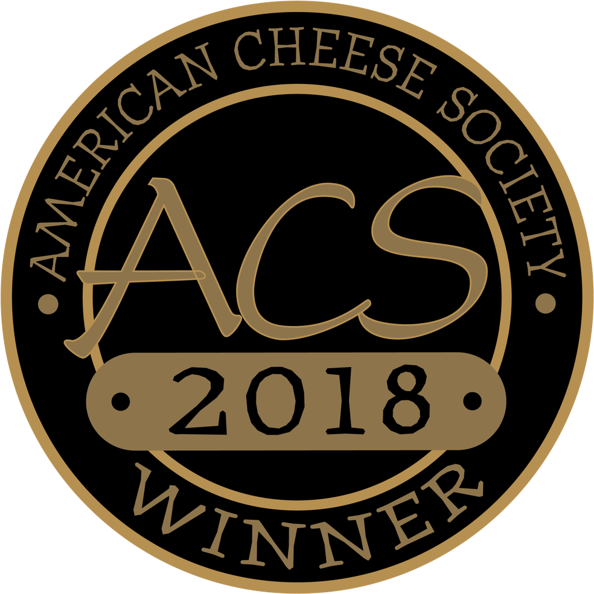
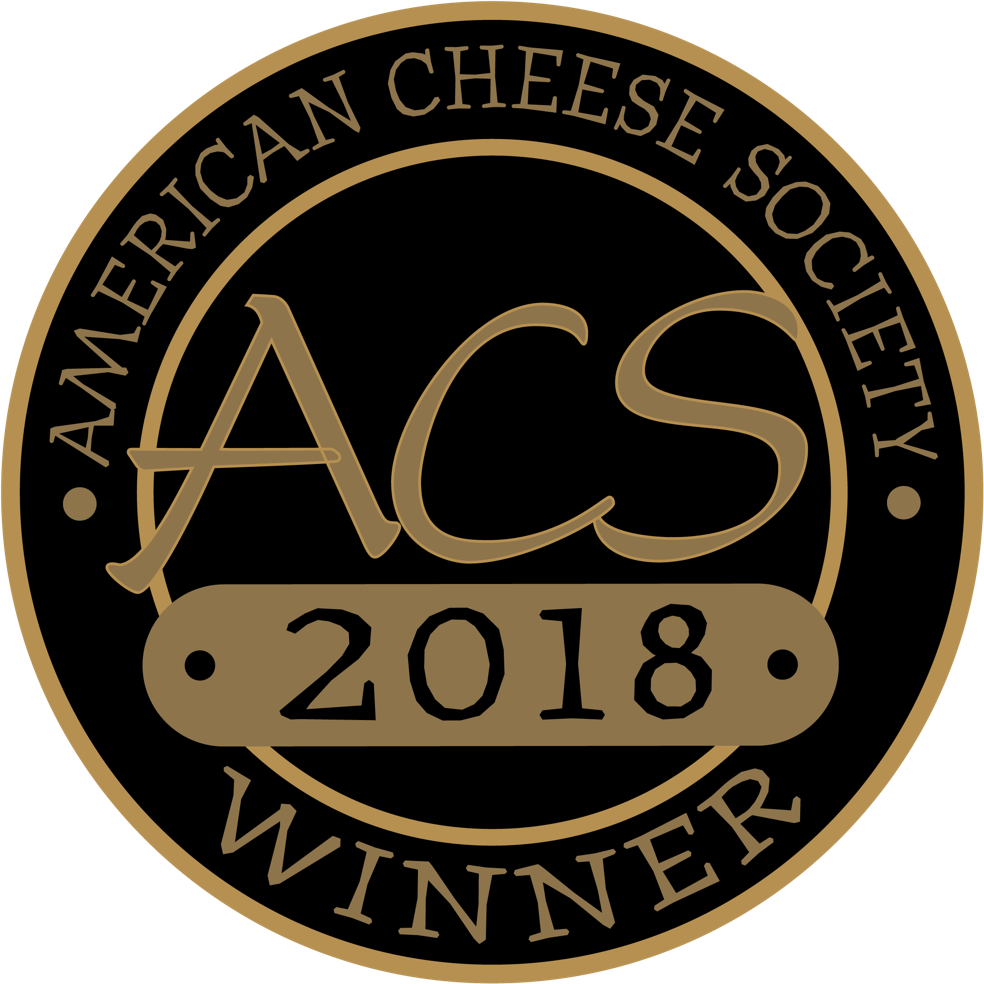

La filosofía de calidad de Don Alberto se basa en que los quesos serían elaborados con 100% leche entera fluida pasteurizada de vaca. Esta filosofía sigue vigente y se ha convertido en un diferenciador importante en nuestros días ya que se traduce en quesos de excelente calidad e inigualable sabor.
La ubicación de Quesos Navarro, Los Altos de Jalisco, región lechera por tradición, facilitó el aprovosionamiento de nuestro principal insumo, leche fresca, de manera local. Buscamos mantener estas relaciones a largo plazo y entenderemos que la unica manera de hacerlo es por medio de un comercio justo y agregando valor a cada uno de los eslabones que forman parte de nuestro cadena.
Más de 50 años en el ramo, millones de litros de leche procesados y toneladas de queso elaboradas podrián resumir la historia de la empresa. La visión emprendedora de Don Alberto Navarro Cruz, su empeño y dedicación para incursionar en el mundo de los lácteos dan origen a Quesos Navarro, empresa familiar que desde los años 60's se ha dedicado a elaborar orgullosamente productos lácteos de la más alta calidad.
Todo comenzó por el interés de Kraft Foods de México en desarrollar un proveedor nacional de Queso Cheddar. En este momento Don Alberto Navarro Cruz había visualizado la empresa como una embotelladora de leche, que no llegó a concretarse ya que se adecuaron las instalaciones para convertirse en una fábrica de quesos, dando así el inicio de la elaboración de queso bajo el concepto de maquila. Años después, en 1961, nace la marca Navarro.
El año 2002 marca el punto de partida para nuestra diversificación, ya que hasta este punto, Quesos Navarro fue una empresa de un solo producto. Todos nuestros quesos se han desarrollado siempre bajo estos principios:
Dominio de la técnica de la fabricación por medio de capacitación y experiencia. La tecnología solo facilita el trabajo y garantiza la calidad, el mérito de hacer buenos quesos es del maestro quesero y de su equipo.
Y desde su origen hasta nuestros días, Quesos Navarro se ha dedicado a mejorar los productos que elbora, Calidad y Sabor han sido y serán nuestros pilares. Las innovaciones que se realizan, tanto en el producto como en los procesos, no comprometen en la tradición de hacer buenos quesos sino que aseguran la calidad de los mismo. Ejemplo de esto es que todos nuestros productos están envasados al alto vacío.
El trabajo en conjunto con nuestros proveedores ha hecho posible el desarrollo de productos y aplicaciones donde hemos sido "Plantas Piloto" Como ejemplo, en el año 2009 se recibe el galardón de Envase y Embalaje Estelar otorgado por la Asociación Mexicana de Envase y Embalaje AC. La razón: Primera empresa a nivel nacional que, en conjunto con nuestro proveedor Sealed Air, implementó la bolsa barrier Abre Fácil para las presentaciones de Queso Cheddar 1kg y 500g. Este envase se utilizó hasta el 2010.
En el año 2008, se inauguran nuevas instalaciones. Esta segunda planta cuenta con tecnología de punta que está enfocada a la eficiente fabricación de quesos. Si bien, los quesos son elaborados con tecnología, no fabricamos quesos industrializados. Además de contar con mejores instalaciones, esta planta ha sido diseñada para generar un bajo impacto ambiental, sumándonos al esfuerzo por conservar el medio ambiente y utilizar los recursos de una manera responsable.
En 2010 nos llenamos de orgullo al ser Primer Queso hecho en México que recibe el 3er lugar en la categoria de Quesos Hispanos y Portugueses otorgado por American Cheese Society. Esta competencia comenzó en 1985 y tiene lugar una vez al año en diferentes localidades de Estados Unidos y Canadá. Para el 2010 compitieron alrededor de 1,500 quesos en 22 categorias, sumando año con año mas competidores.
En 2011 celebramos el 50 Aniversario. Quesos Navarro renueva su imagen, mostrando orgullosamente su origen, su edad y su primera razón de su existir, la herencia y el gusto de ser queseros.
Un logro más en el año 2014, ya que fuimos la primer compañia de quesos que obtuvo la certificación por COFOCALEC, gracias a que nuestros Quesos Adobera, Panela y Cheddar son elaborados 100% leche fresca de vaca.
En 2016, volvimos a lograrlo sumando a nuestro Queso Cheddar Añejo. Nuestras certificaciones se lograron bajo la norma NMX-F-713-COFOCALEC-2014

Queso Panela Bajo en Grasas
Queso Rallado
Queso Cubicado
Queso Rebanado
A lo largo de los años, hemos sido galardonados con varios premios de reconocimiento mundial de distintas competencias de quesos y por asociaciones expertas en el ramo, tales como la ACS Judging and Competition, los World Championship Cheese Contest y los World Cheese Awards, donde miles de quesos compiten en varias categorías por llevarse una medalla a casa. Hasta la fecha, Quesos NAVARRO ha ganado 10 premios, demostrando que el oficio de hacer queso de calidad, tiene grandes resultados.

 



2010 ACS Judging and Competition Bronce en la categoria Hispanic & Portuguese style cheeses
2016 World Championship Cheese Contest Best of Class Hard Hispanic Cheeses
2016 Word Cheese Awards Bronce
2017 Word Cheese Awards Super Gold en la categoría Quesos Blandos y Semi blandos. El súper oro es el máximo reconocimiento que se puede obtener en estos premios, este queso también fue nombrado como el doceavo mejor queso del mundo.
2018 World Championship Cheese Contest Best of Class Hard Hispanic Cheeses
2018 ACS Judging and Competition Primer lugar en la catergoría Hispanic & Portuguese Chesses, Cooking Hispanic
2018 Word Cheese Awards ORO Any other semi-hard cow´s milk cheese
2018 Word Cheese Awards PLATA Any other semi-hard cow´s milk cheese
2018 Word Cheese Awards BRONCE Mature traditional Cheddar sweeter flavor
2018 Word Cheese Awards Major Winners con un Major Trophy como el Best South American Cheese con nuestro Queso Añejo de los Altos
JALISCO - ZMG, Tepatitlán, Interior del estado, Pto. Vallarta
COSTA ALEGRE - Colima (Col, Manzanillo), Nayarit (Tepic, Costa Alegre)
SINALOA - Culiacán, Mochis y Mazatlan
BAJÍO - León, Gto. Interior Gto, Irapuato, Salamanca
Centro - CDMX, Estado de México
NORESTE - MTY, Tamaulipas